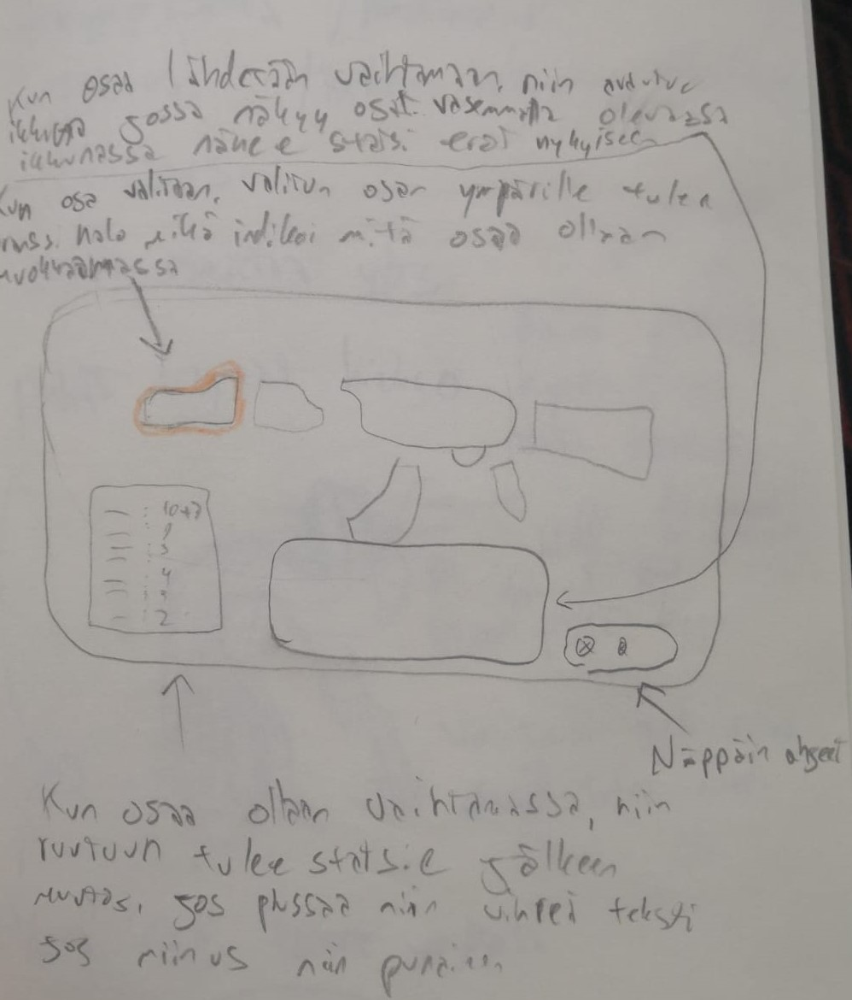

2D elementit ja 3D mallinnus
Suurin osa 3D malleista joita minä tein, on pienempi "assetteja" joita ripotellaan kentälle
koristamaan ja luomaan immersiota maailmaan. Näihin lukeutuu mm. pahvilaatikot, matot, tölkit,
lamput, ilmanvaihtokanavat ja muut vastaavanlaiset arkipäiväisemmät objektit. Osasin käsitellä
Blenderiä jotenkuten ennenkuin aloitimme projektin, mutta osaamiseni Blenderin kanssa on parantunut
huomattavasti, työn tekeminen on nopeampaa ja sulavampaa. Olen oppinut uusien työkalujen sekä sisäänrakennettujen
muuttujien käyttämistä. Suurimpana oppina näkisin kuitenkin materiaalien ja tektuurien tekemisen sekä
niiden "bakeemisen" malliin. Ennen projektia ei malleissani oikein ollut mitään muuta kuin mattavärejä,
nyt osaan luoda proseduraalista ruostetta, puulle ominaista kuviota tai vaikka asfaltille kuuluvaa
kivistä tekstuuria.
Ohessa on ensimmäisiä yrityksiä UV-wrappingin ja teksturoinnin kanssa.

Tein kaiken kaikkiaan yli 20 - 30 pienempää assettia, joista osaan tein itse tekstuurit ja osiin en.
Alapuolella on simppelimpää assettia johon tein värit sekä kaikki muodot, vain tekstuurit puuttuu.


Hahmo mallinnukseen en koskenut enää projektin aloittamisen jälkeen. Käytimme projektissa minun alkuperäistä
hahmoa mallina josta lähtisimme eteenpäin. Hahmoni ei sopinut tyyliltään lopulliseen peliin, joten vaihdoimme
mallin sittemin kokonaan toisenlaiseen tyyliin.

Otin osaa myös 2D elementtien toteutukseen kuten suunnitteluunkin. Suunnittelin ja sittemmin toteutin
käyttöliittymän teeman ja sekä grafiikat. Tein yksittäiset elementit Photoshopissa josta splice työkalun avulla saimme
kaikki osat erikseen jotka sitten lisättiin Unityyn, jossa loimme varjot tietyille objekteille voimme huijata elementit
näyttämään 3D malleilta. Huomio, hahmo keskellä ei ole minun mallintama

Tein myös jonkinverran sketsejä ja suunnitelmia aseista, hahmoista ja asseteista. Ohessa muutama idea jotka tein


